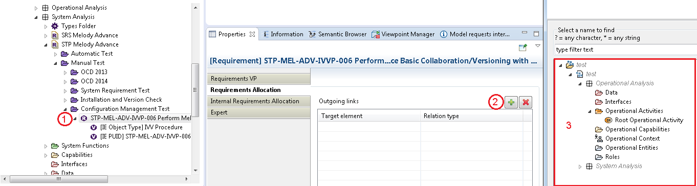
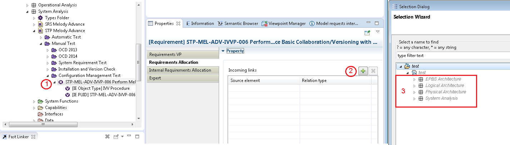
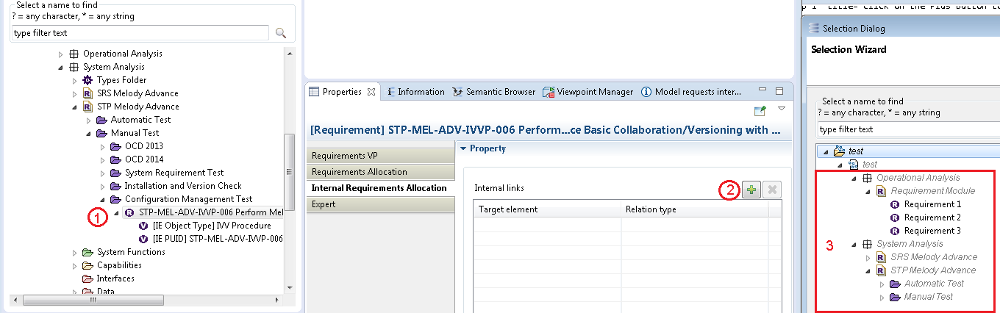

Requirements Allocation
The Requirements Allocation view shows all incoming and outgoing relations for an element. This element could be a Requirement, a Capella element or a Diagram. The addition of a relation can be done in three steps as demonstrated with the following example
Click on the Plus button to show target elements
Select multiple elements to which we want to create relations
Choose the Relation Type of each added relation (available Relation types are those imported or created in the current architecture level and all upper levels of the current model, Relation types of referenced libraries are not available. See "Add new relation types" part for more details on Relation types creation)
- For outgoing links, target elements are limited to those stored in the current layer and the upper ones
- For incoming links, source elements are limited to those stored in the current layer and the lower ones
- For internal links, target elements are limited to those stored in the current layer and the upper ones
- For a Requirement stored at System Analysis layer, available target elements for an outgoing link can only come from System Analysis layer and upper ones (Operational Analysis) 
- Available source elements for an incoming link can only come from System Analysis layer and lower ones (Logical Architecture, Physical Architecture and EPBS Architecture) 
- Similarly, available target elements for an internal link can only come from System Analysis layer and upper ones 


Internal Requirements Allocation
The Internal Requirements Allocation view shows all relations coming from one Requirement to another Requirement.

Multiple Requirements can be chosen to create new Relations

Technically, relations are stored under the source element of the relation. Also note that relations are technical elements and they are filtered by default. In order to see relations in Capella project explorer, the default filter must be deactivated. Following is an example of Requirements and their relations to/from Capella Elements:

Relations between elements stored in different layers
Certain rules are applied when creating relations between Requirements and Capella elements (and vice versa), especially when they are stored in different layers. In general, a relation is valid if its target comes from the same layer or another upper layer than its source. Therefore,Some limitations should be noted for Libraries (see the suitable part of Limitations section).
The following is an example of creating different types of relations from a Requirement.